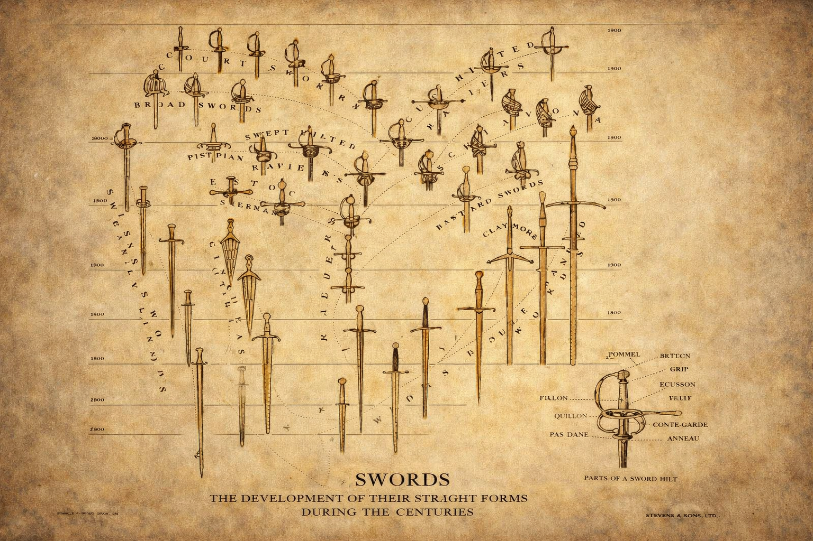
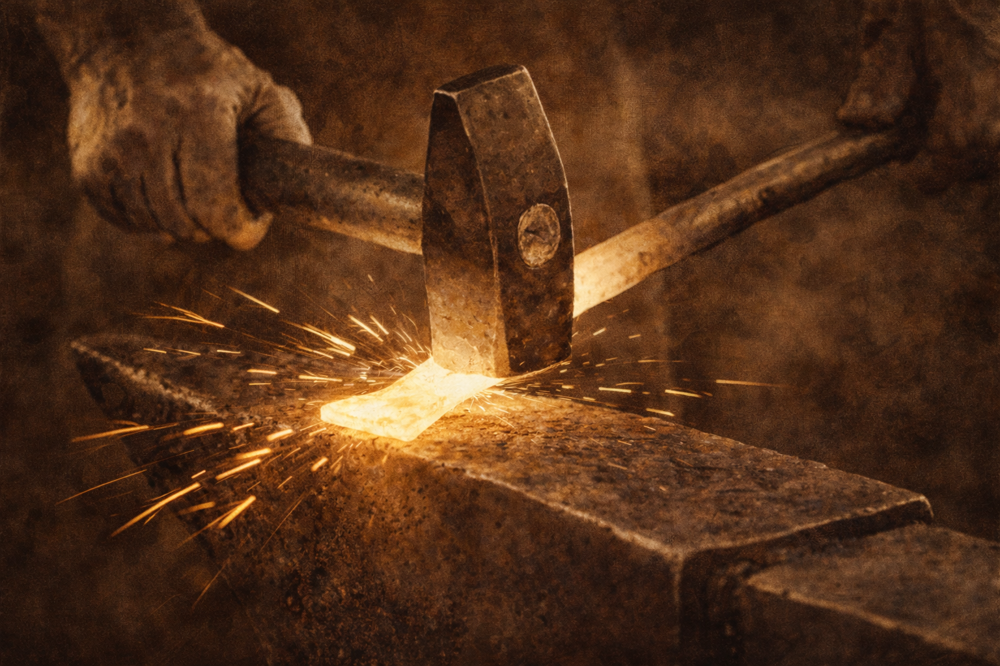
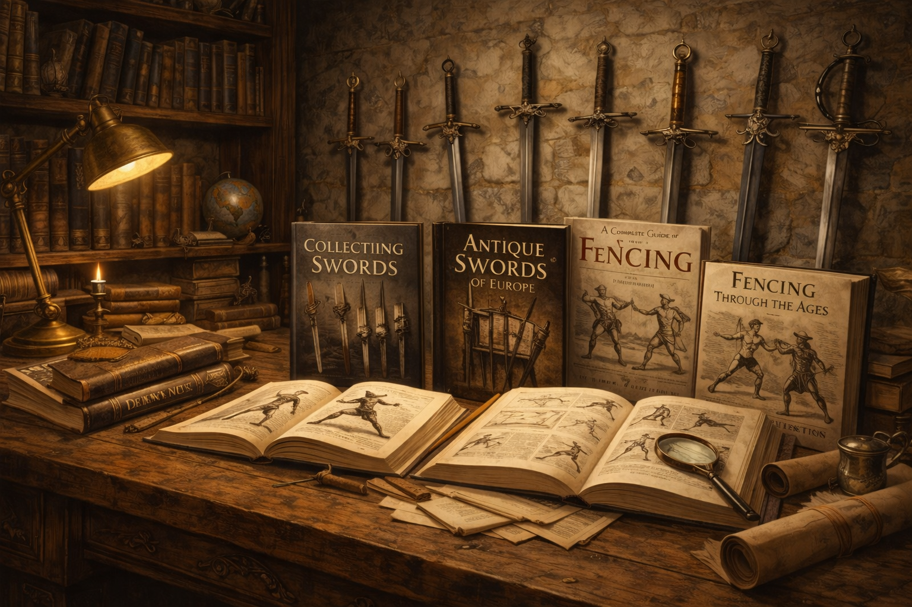
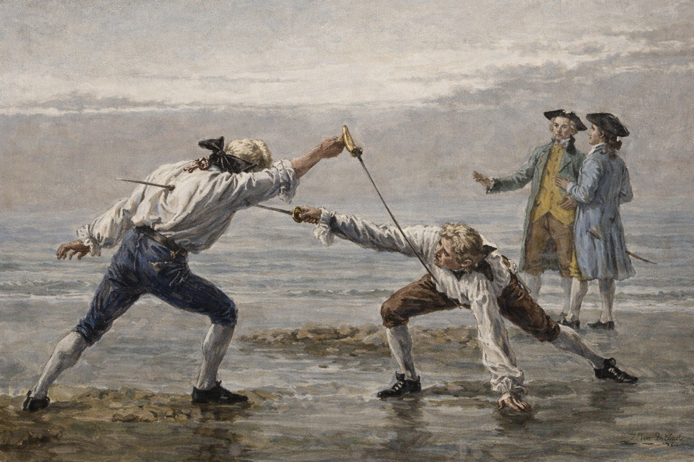
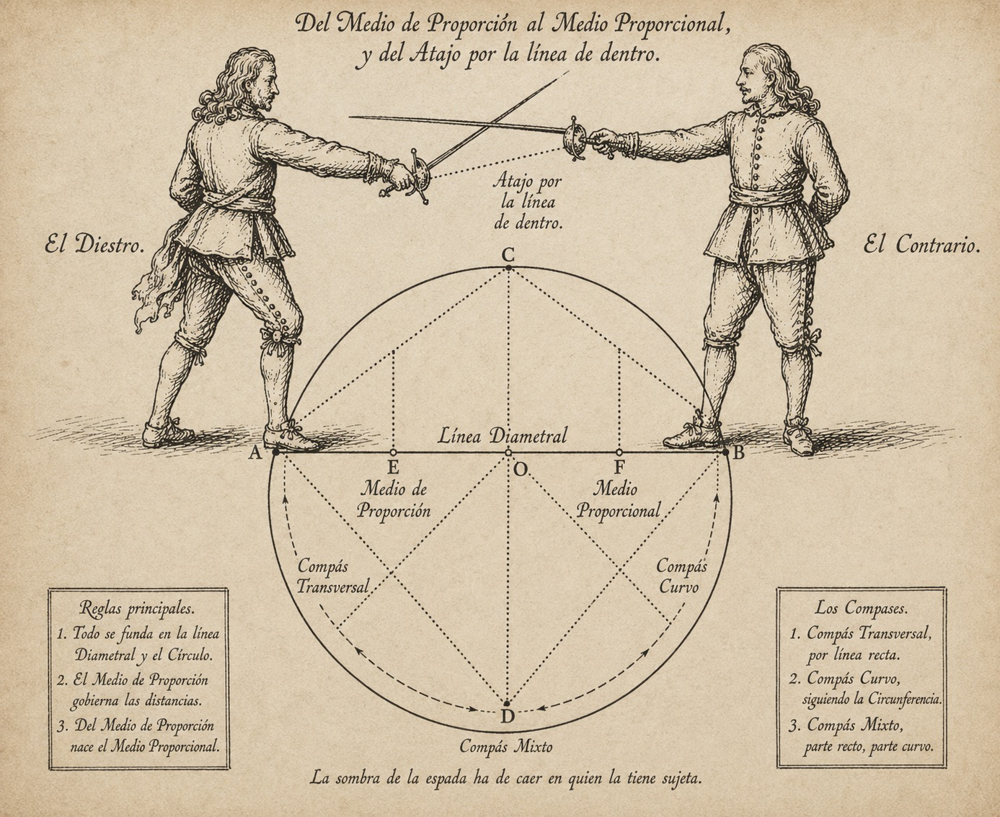
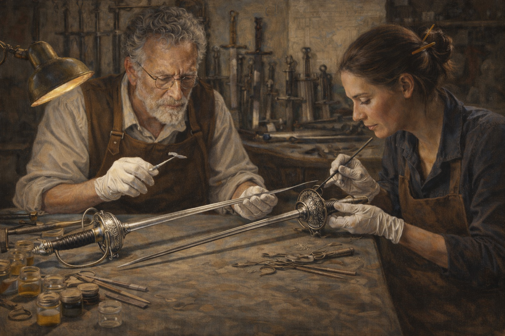

Put history into practice
Educational Programs
Discover guided drills, technical exercises, and historical fencing instruction, including Verdadera Destreza, rapier, and sabre.
Explore TrainingDedicated to the study,
preservation, and practice of
European swordsmanship.
The art. The science. The legacy.
Studying the swords, their history, their craft,
and the art of their use.
Study · Preserve · Practice
To preserve and advance the knowledge of historical swordsmanship through education, research, and structured training—ensuring these traditions remain accessible to future generations.
We combine historical treatise analysis, the study of surviving swords, and hands-on instruction to understand the European sword and its legacy.
About the Society
Discover the traditions, craftsmanship, and knowledge behind the blade.
The cultural, military, and ceremonial roles of swords.
Explore history →
Forging, steel, and the science of blade construction.
Study the craft →
Hilts, markings, decoration, and surviving examples.
Examine artifacts →
The evolution and martial use of European swords.
Discover weapons →Original fencing manuals and historical writings.
Open the library →
Historical techniques through structured instruction.
Explore training →The sword as a historical source
Every blade invites closer study. Explore antique swords through their construction, markings, craftsmanship, and historical context.
Explore the Sword Collection Decorative hero artwork; not a catalogued HSS artifact.Put history into practice
Discover guided drills, technical exercises, and historical fencing instruction, including Verdadera Destreza, rapier, and sabre.
Explore TrainingLearn from the sources
Explore original fencing treatises, period writings, and the historical foundations of European swordsmanship.
Explore Resources
Keep the legacy alive
Help sustain education, historical research, preservation, and access to training equipment and materials.
Donate to HSSCollectors. Researchers. Practitioners.
Ask about training, research, or contributing equipment, books, and historical artifacts.